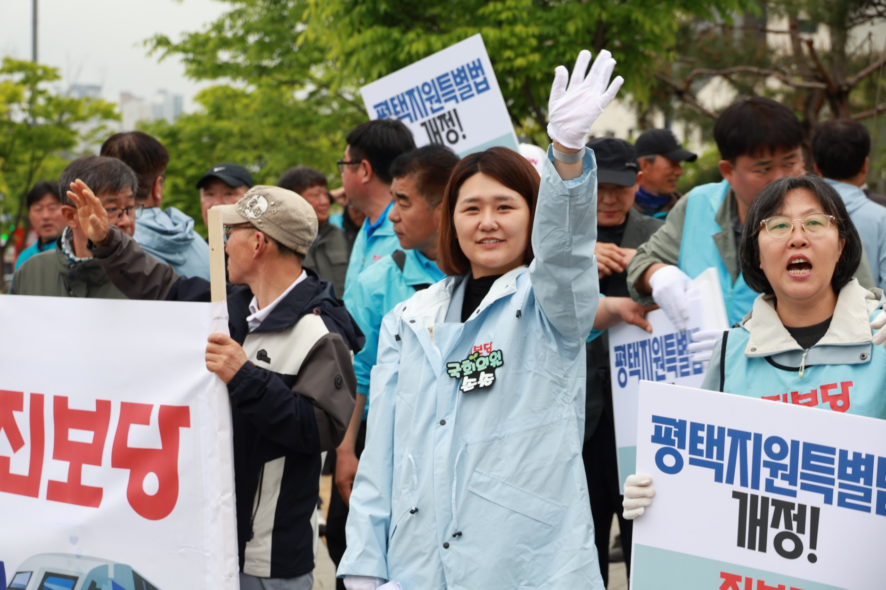
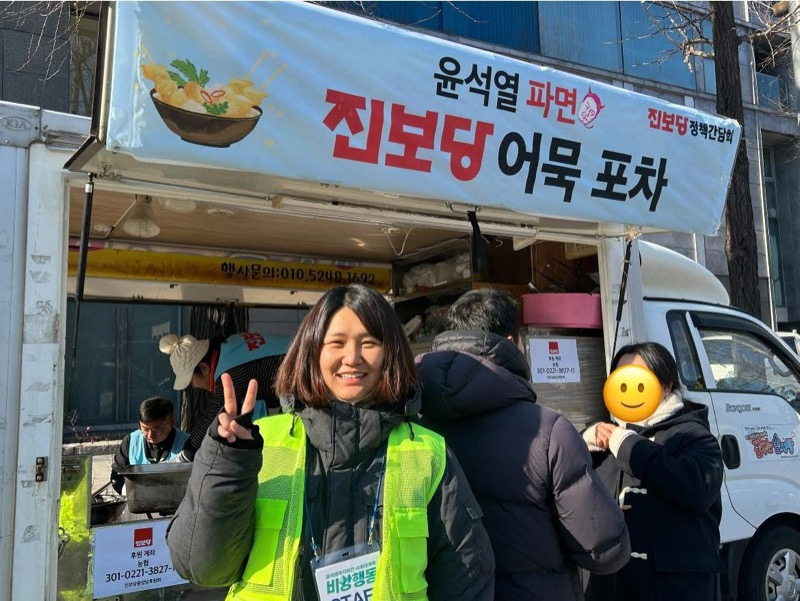
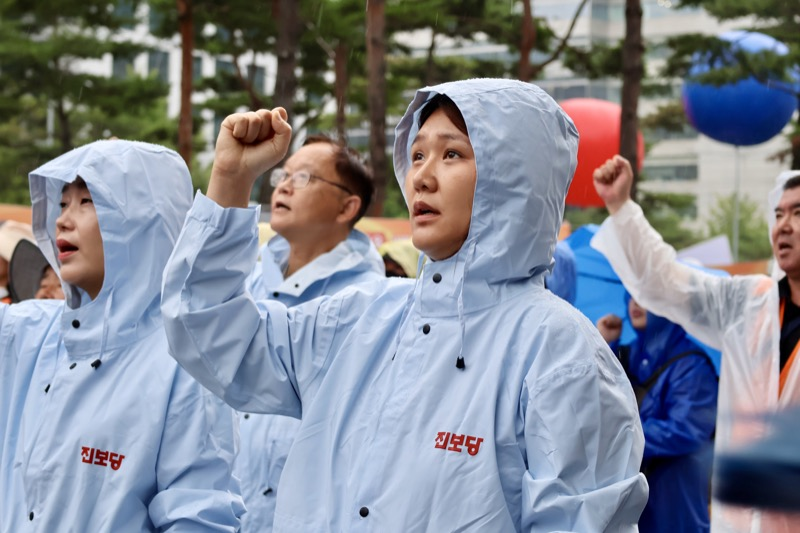
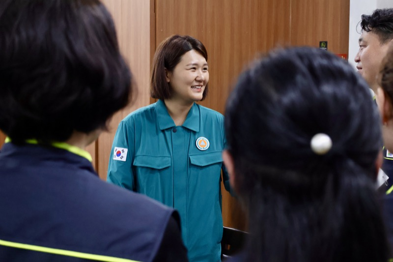

정치검찰과의
정면승부
월간 손솔
국회의원 손솔 의정보고서
2026년 4월호
커버스토리
윤석열 조작기소의 몸통, 정치검찰을 국정조사에 세웠습니다
4월의 국정조사, 손솔이 치열하게 싸워 온 순간들을 전해드립니다.
윤석열정권 정치검찰 조작기소 의혹사건 진상규명 국정조사특별위원회

대장동 국정조사4.16
쌍방울 대북송금 국정조사4.3

서해 피격사건 국정조사4.9

부동산 통계조작 국정조사4.21
대장동 국정조사4.3, 4.7
[예술활동증명, 현장의 언어로 묻다] 국회토론회4.22
성북구 차별금지법 작전회의4.10
학교예술강사 인터뷰
손솔의 한 달
손솔의 4월 몰아보기
-
4.1
차별금지법 인터뷰(더 코리아 해럴드)
문화체육관광위원회 전체회의 -
4.2
본회의
<힌드의 목소리> 시사회 -
4.3
윤석열 정권 정치검찰 조작기소 의혹 사건 진상규명 국정조사특별위원회 전체회의
차별금지법 제정을 위한 손솔의 작전회의_이화여대 -
4.4
페미들의 작당모의
침략전쟁규탄!파병반대!3차 평화행동
4.4 내란청산 사회대개혁 주권자 승리의 날 시민행동 -
4.6
학교예술강사 2026 본예산 신속 집행과 생계지원 추경 편성 촉구 기자회견
학교예술강사 인터뷰
문체위 전체회의 -
4.7
윤석열 정권 정치검찰 조작기소 의혹 사건 진상규명 국정조사특별위원회 전체회의
-
4.8
콘텐츠산업 노동자 노동환경 개선을 위한 입법과제 토론회
평택 괴태곶 봉수대 적문스님 면담 -
4.9
윤석열 정권 정치검찰 조작기소 의혹 사건 진상규명 국정조사특별위원회 현장조사
윤석열 정권 정치검찰 조작기소 의혹 사건 진상규명 국정조사특별위원회 전체회의 -
4.10
세월호참사 12주기 전 생명안전기본법 제정 촉구 기자회견
차별금지법제정을 위한 손솔의 작전회의_성북구편
본회의 -
4.13
독일신문 인터뷰
팟캐스트 '그것이알기싫다' 인터뷰 녹화 -
4.14
윤석열 정권 정치검찰 조작기소 의혹 사건 진상규명 국정조사특별위원회 전체회의
긴급브리핑 조국대표 평택을 출마 반대 -
4.15
국가보안법 피해자 증언대회 '목소리들' <인혁당 재건위 조작 사건 피해 가족들>
학교급식 연대의밤 -
4.16
윤석열 정권 정치검찰 조작기소 의혹 사건 진상규명 국정조사특별위원회 전체회의
-
4.17
본회의
극조특위 기자회견 -
4.18
전국교직원노동조합 차별금지법 강연
진보당 경기북부 청년당원 강연 -
4.19
4월혁명 66주년 민족민주운동단체합동참배식
-
4.20
뉴스피릿 여성 국회의원 인터뷰
후원 안내
후원으로 손솔을 키워주세요!
손솔의 든든한 편이 되어주세요.
열정적인 의정활동으로 보답하겠습니다.
후원 계좌
농협 301-0373-2658-21
(국회의원 손솔 후원회)